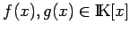
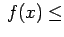
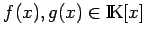
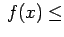
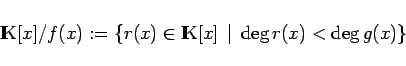

Inhalt Index DeskTop Bronstein

 Algebra und Diskrete Mathematik Klassische algebraische Strukturen Ringe und Körper Endliche Körper und Schieberegister
Algebra und Diskrete Mathematik Klassische algebraische Strukturen Ringe und Körper Endliche Körper und Schieberegister


Körper zeichnen sich insbesondere dadurch aus, dass sie keine Nullteiler besitzen. Endliche Körper sind sogar dadurch charakterisiert. Nullteiler sind von Null verschiedene Elemente eines Ringes, für die ein von Null verschiedenes Element existiert, so dass das Produkt gleich Null wird. Die als Beispiel D für Körpererweiterungen erwähnten Restklassenringe  haben genau dann Nullteiler, wenn m keine Primzahl ist, denn hat (Multiplikation modulo m) zur Folge.
haben genau dann Nullteiler, wenn m keine Primzahl ist, denn hat (Multiplikation modulo m) zur Folge.
Auf diese Weise erhält man mit , p Primzahl, (bis auf Isomorphie) alle endlichen Körper mit p Elementen. Allgemeiner gilt:
Für jede Primzahlpotenz pn gibt es (bis auf Isomorphie) genau einen Körper mit pn Elementen, und jeder endliche Körper hat pn Elemente.
Die Körper mit pn Elementen werden auch mit GF(pn) bezeichnet (GALOIS field). Man beachte, für n >1 ist GF(pn) von verschieden.
Zur Konstruktion endlicher Körper mit pn Elementen (p Primzahl, n >1) werden Polynomringe über (s. Beispiel C im Abschnitt Körpererweiterungen) und irreduzible Polynome benötigt:
besteht aus allen Polynomen mit Koeffizienten aus . Mit den Koeffizienten wird also bei der Addition und Multiplikation der Polynome modulo p gerechnet.
In Polynomringen über Körpern  gilt der Divisionsalgorithmus (Polynomdivision mit Rest), d.h. für  mit deg deg existieren mit
gilt der Divisionsalgorithmus (Polynomdivision mit Rest), d.h. für  mit deg deg existieren mit
| (5.207) |
Diese Situation wird durch beschrieben. Fortgesetzte Division mit Rest liefert den EUKLIDischen Algorithmus für Polynomringe und der letzte von Null verschiedene Rest den größten gemeinsamen Teiler (ggT) der Polynome f(x) und g(x).
Ein Polynom heißt irreduzibel, wenn es sich nicht als Produkt von Polynomen niedrigeren Grades schreiben lässt, d.h (in Analogie zu den Primzahlen in  ) f(x) ist Primelement in . Für Polynome zweiten oder dritten Grades ist Irreduzibilität gleichbedeutend mit der Nichtexistenz von Nullstellen in
) f(x) ist Primelement in . Für Polynome zweiten oder dritten Grades ist Irreduzibilität gleichbedeutend mit der Nichtexistenz von Nullstellen in  .
.
Man kann zeigen, dass in irreduzible Polynome beliebigen Grades liegen.
Für ein irreduzibles Polynom wird
|  | (5.208) |
ein Körper, in dem modulo f(x) multipliziert wird, d.h. .
Ist und deg, so hat der Körper Elemente, d.h. GF, wobei f(x) ein irreduzibles Polynom n-ten Grades ist.
Die multiplikative Gruppe eines endlichen Körpers  ist zyklisch, d.h., es gibt ein Element , so dass jedes Element aus als Potenz von a geschrieben werden kann. Man sagt, a erzeugt die multiplikative Gruppe des Körpers: .
ist zyklisch, d.h., es gibt ein Element , so dass jedes Element aus als Potenz von a geschrieben werden kann. Man sagt, a erzeugt die multiplikative Gruppe des Körpers: .
Ein irreduzibles Polynom heißt primitiv, wenn die Potenzen von x alle von Null verschiedenen Elemente von durchlaufen, d.h. wenn x die multiplikative Gruppe von erzeugt.
Mit einem primitiven Polynom -ten Grades aus kann man eine ,,Logarithmentafel`` für GF(pn) aufstellen, die das Rechnen in diesem Körper wesentlich erleichtert.
, kann also als Erweiterungskörper von  =:GF(p) aufgefasst werden. Nach dem Satz von FERMAT gilt für alle die Gleichung aq =a, d.h. jedes Element ist Nullstelle eines Polynoms mit Koeffizienten aus
=:GF(p) aufgefasst werden. Nach dem Satz von FERMAT gilt für alle die Gleichung aq =a, d.h. jedes Element ist Nullstelle eines Polynoms mit Koeffizienten aus  , z.B. des Polynoms xq -x.
, z.B. des Polynoms xq -x.
Das Polynom heißt Minimalpolynom von über  , wenn gilt: ma(x) hat a zur Nullstelle, den höchsten Koeffizienten 1 (ma(x) ist normiert) und ist unter diesen dasjenige mit minimalem Grad. Das Minimalpolynom ma(x) hat folgende Eigenschaften:
, wenn gilt: ma(x) hat a zur Nullstelle, den höchsten Koeffizienten 1 (ma(x) ist normiert) und ist unter diesen dasjenige mit minimalem Grad. Das Minimalpolynom ma(x) hat folgende Eigenschaften:
In den voranstehenden Ausführungen kann für p statt einer Primzahl auch eine Primzahlpotenz stehen.
Es sei q =pn eine Primzahlpotenz und ggT. Dann heißt jedes Element a eines Erweiterungskörpers von GF, das die Gleichung xn =1 erfüllt, n-te Einheitswurzel über GF.
Die n-ten Einheitswurzeln über GF(q) bilden eine zyklische Gruppe der Ordnung n. Ein erzeugendes Element dieser Gruppe heißt primitive n-te Einheitswurzel.